Projekts
Jura Zuitiņa privātprakse
Juris Zuitiņš ir psihologs un psihoterapijas speciālists Rīgā. Viņa lapa pastāvēja jau sen, bet Google Sites veidnē un apakšdomēnā. Šis ir stāsts par to, kā to pārcēlām uz savu adresi, saglabājot visu, kas Jurim bija svarīgs.
Bija un irPavelc un salīdzini
Pa kreisi vecā lapa Google Sites vidē, pa labi jaunā zuitins.lv. Tas pats cilvēks, tie paši teksti, cita sajūta.
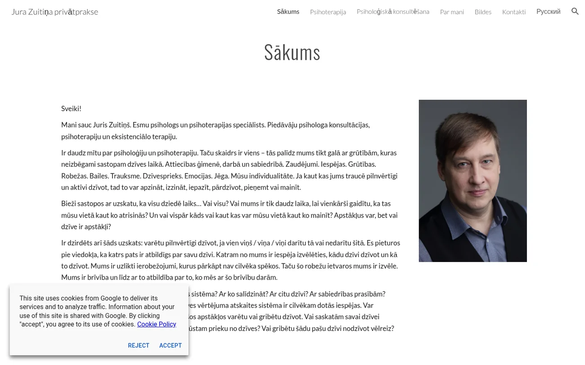
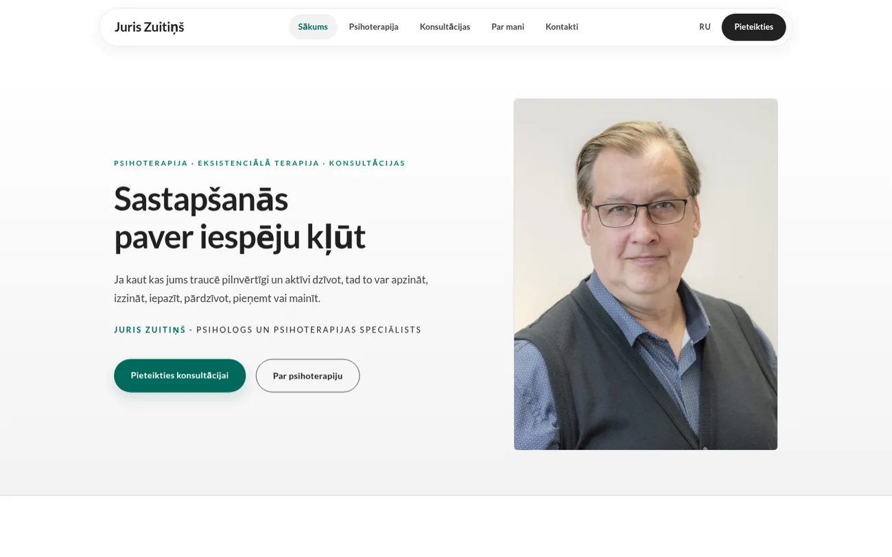
Bija IrVelc slīdni pa kreisi un pa labi
IzaicinājumsLapa, kas dzīvoja apakšdomēnā
Jurim Zuitiņam mājaslapa jau bija. Viņš pats to bija salicis Google Sites vidē, un tajā bija viss būtiskais: apraksts par psihoterapiju un psiholoģisko konsultēšanu, viņa skatījums uz dzīvi, portrets, kabineta bildes un kontakti. Saturs bija labs. Tas bija Jura paša vārdos, pārdomāts un patiess, un tieši tāpēc to nevajadzēja rakstīt no jauna.
Problēma bija čaulā, kurā šis saturs dzīvoja. Latviešu lapa atradās apakšdomēnā lv.zuitins.lv, krievu versija vēl citā adresē ru.zuitins.lv, un tās bija divas atsevišķas Google Sites lapas, kas viena par otru nezināja. Katru apmeklētāju vispirms sagaidīja Google sīkdatņu paziņojums angļu valodā, virs satura stāvēja veidnes virsraksts “Sākums”, un meklēšanas ikona lapas stūrī piedāvāja “Search this site”.
Lai piezvanītu, tālrunis bija jāmeklē sadaļā “Kontakti”, jo nevienā citā lapā tā nebija. Meklētājiem lapai nebija apraksta un vietnes kartes, tāpēc Google rādīja to, ko pats izdomāja. Un telefonā, kur psihoterapeitu meklē visbiežāk, viss saplaka vienā garā teksta kolonnā.
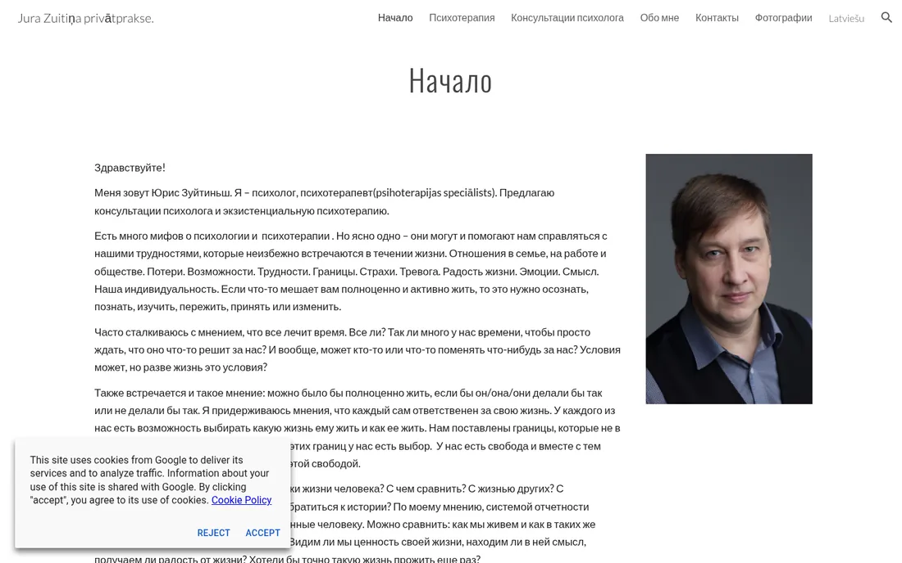
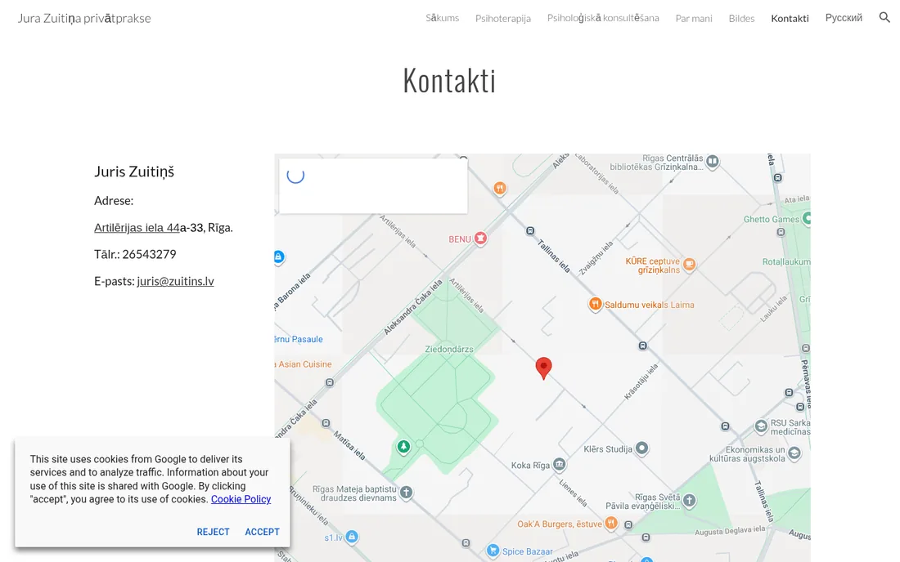
Kas traucēja
- Divas adreses, neviena galvenā. Latviešu un krievu lapa apakšdomēnos, bet pati zuitins.lv adrese cilvēku uz Jura lapu neveda.
- Google, ne Juris. Sīkdatņu paziņojums, angliska saskarne un veidnes virsraksti radīja iespaidu par pagaidu lapu.
- Septiņi punkti izvēlnē. Sākums, Psihoterapija, Psiholoģiskā konsultēšana, Par mani, Bildes, Kontakti un Русский. Bez skaidra nākamā soļa.
- Tālrunis vienā vietā. Lai pieteiktos, bija jānonāk līdz sadaļai “Kontakti”. Nekur citur aicinājuma nebija.
- Meklētājiem nekā. Bez lapas apraksta, bez vietnes kartes, bez norādes, ka LV un RU ir viena un tā pati prakse.
RisinājumsTā pati prakse, savā mājā
Lapu uzbūvējām no jauna, bet ne ar jaunu seju. Pirmais melnraksts bija ar citiem burtiem un krēmkrāsas fonu, un Juris teica skaidri: viņa klienti veco lapu pazīst, un viņš grib, lai jaunā ir tās turpinājums. Tāpēc krāsas un Lato fontu pārņēmām no vecās lapas, tekstus atstājām Jura paša vārdos un mainījām tikai to, kas traucēja: struktūru, ritmu, ceļu līdz pieteikšanās brīdim un pašu adresi.
Septiņu izvēlnes punktu vietā palika pieci. Sadaļu “Bildes” ievietojām “Kontaktos”, lai kabinetu redz tur, kur skatās adresi, un krievu valoda kļuva par pārslēgu katras lapas augšā, nevis atsevišķu vietni.
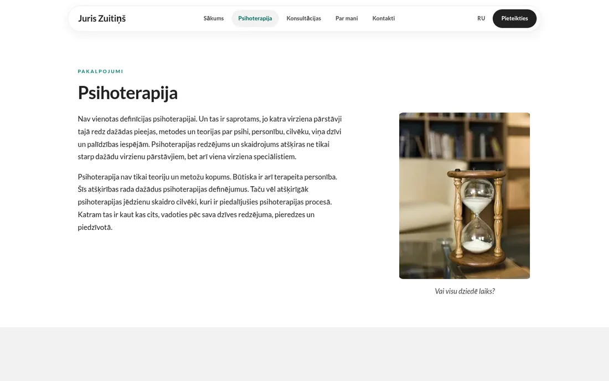
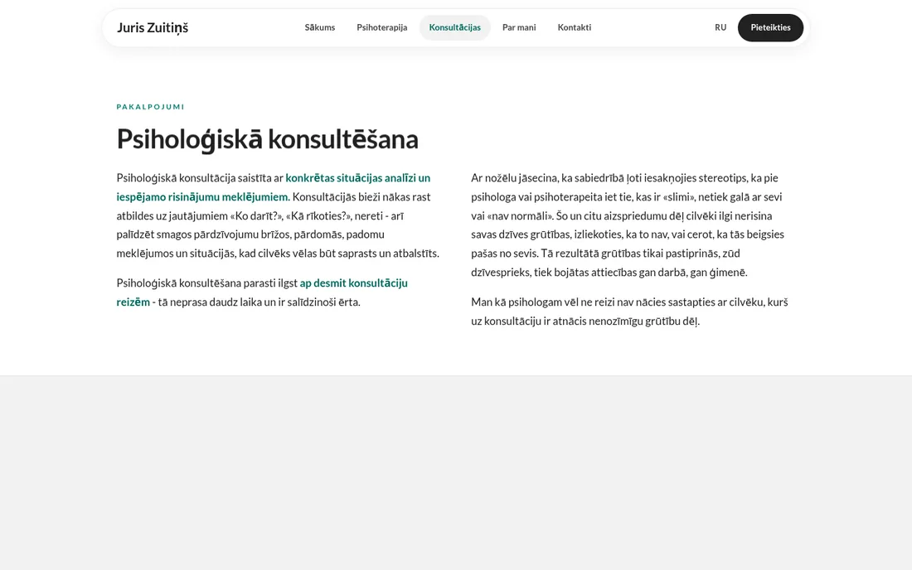
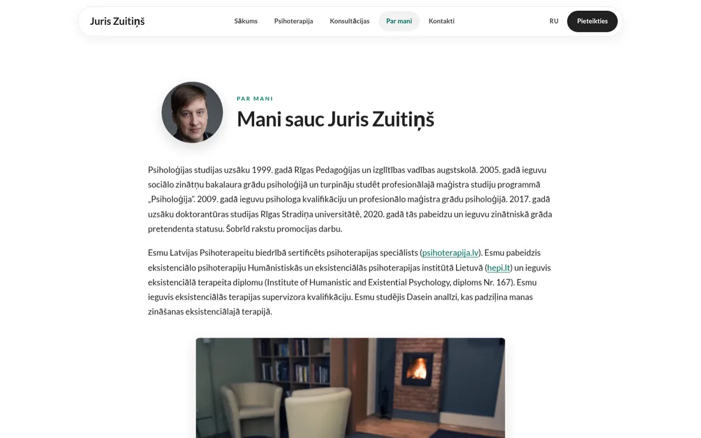
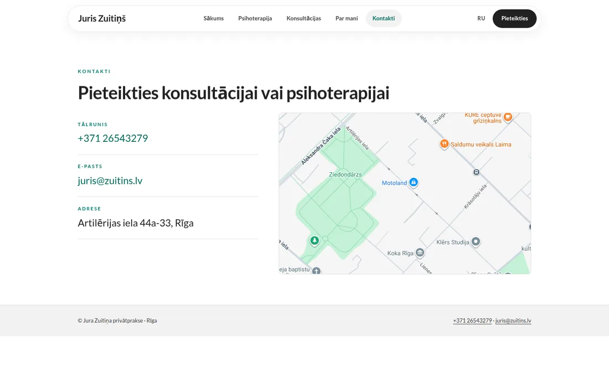
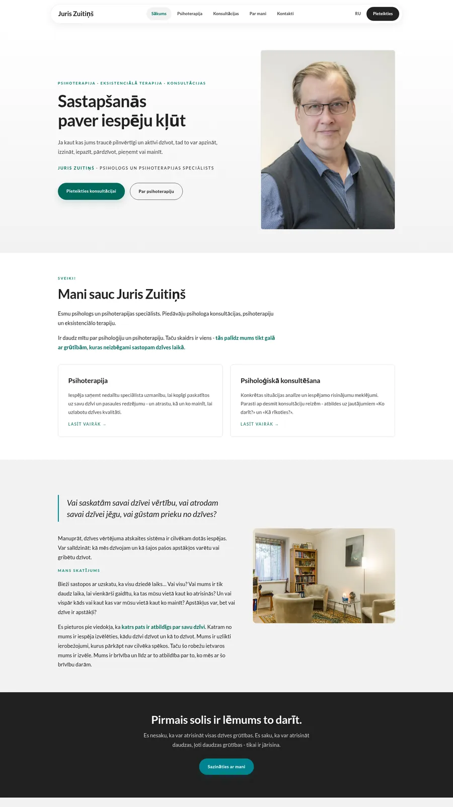
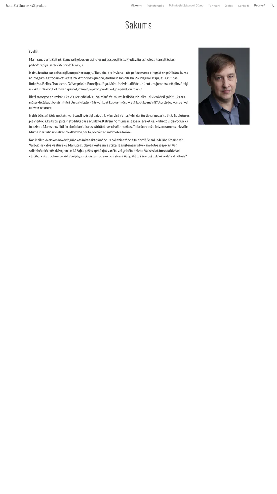
SākumsViens ekrāns, kas pasaka visu
Vecajā lapā sākums bija viens garš teksts. Jaunajā to sadalījām ritmā. Augšā portrets, virsraksts “Sastapšanās paver iespēju kļūt” un Jura teikums par to, ka traucējošo var apzināt, iepazīt, pieņemt vai mainīt. Divas pogas: pieteikties vai vispirms palasīt par psihoterapiju.
Tālāk iepazīšanās “Mani sauc Juris Zuitiņš”, divas kartītes ar pakalpojumiem, Jura skatījums ar kabineta fotogrāfiju un tumša josla ar vārdiem “Pirmais solis ir lēmums to darīt”. Tas viss ir vecās lapas teksts, tikai sakārtots tā, lai acs zina, kur iet.
Virsrakstu izvēlējās Juris pats. Melnrakstā bija jautājums no viņa teksta beigām, “Vai gribētu šādu pašu dzīvi nodzīvot vēlreiz?”, bet viņš gribēja, lai lapa sākas ar iespēju, nevis ar jautājumu.
Psihoterapija un konsultācijasDivi pakalpojumi, divas lapas
Juris skaidri nošķir psihoterapiju no psiholoģiskās konsultēšanas, un lapa to ciena. Psihoterapija ir ilgāks ceļš, iespēja saņemt nedalītu speciālista uzmanību un paskatīties uz savu dzīvi kopumā. Konsultēšana ir konkrētas situācijas analīze, parasti ap desmit tikšanās reizēm, ar atbildēm uz jautājumiem “Ko darīt?” un “Kā rīkoties?”.
Garo tekstu salikām divās kolonnās, lai to ir viegli lasīt arī datorā. Svarīgākos teikumus Juris iezīmēja pats, un tie lapā ir tirkīza krāsā ar pasvītrojumu, kas uzzīmējas rindu pa rindai, kad lasītājs līdz tam noritina. Blakus stāv smilšu pulkstenis no Jura kabineta ar parakstu “Vai visu dziedē laiks?”, kas ir viņa teksta atslēgas jautājums.
Par maniKāpēc tieši pie Jura
Cilvēks, kurš meklē psihoterapeitu, grib zināt, kam uztic savu stāstu. Sadaļā “Par mani” ir Jura ceļš: psiholoģijas studijas kopš 1999. gada, maģistra grāds, doktorantūra, sertifikāts Latvijas Psihoterapeitu biedrībā un eksistenciālās terapijas diploms no institūta Lietuvā. Tas viss bija arī vecajā lapā, bet tagad to lasa ar apaļu portretu blakus virsrakstam, nevis kā garu rindkopu.
Lapa beidzas ar Jura jautājumu “Vai es esmu tas cilvēks, pie kura gribat nākt?” un kamīna fotogrāfiju no kabineta. Neuzbāzīgs mājiens, ka atbildi var pārbaudīt klātienē.
KontaktiViens klikšķis līdz zvanam
Specifikācijā bija paredzēta kontaktforma, un mēs to uzbūvējām. Tad Juris pateica, ka viņš grib, lai cilvēki zvana vai raksta tieši, bez starpniekiem. Formu izņēmām un tās vietā ielikām trīs lielas rindas: tālrunis, e-pasts, adrese. Uz tālruņa var uzspiest, un telefonā tas uzreiz zvana.
Blakus ir karte ar Artilērijas ielu un zemāk kabineta fotogrāfijas, kuras var atvērt lielākas. Vecajā lapā tās bija atsevišķā sadaļā “Bildes”. Tagad tās ir tur, kur cilvēks skatās, kā līdz kabinetam nokļūt.
Poga “Pieteikties” ir katras lapas augšā, un kājenē visur ir tālrunis un e-pasts. Lai kurā lapā cilvēks būtu, līdz zvanam ir viens klikšķis.
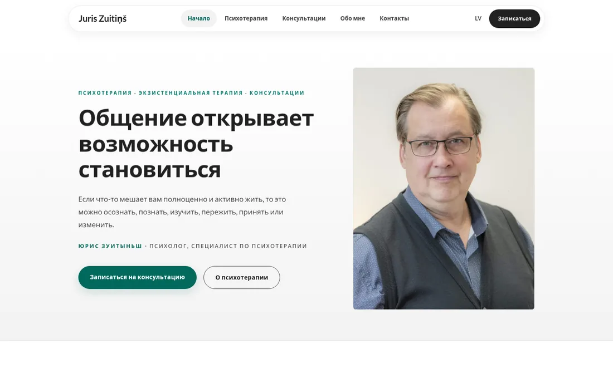
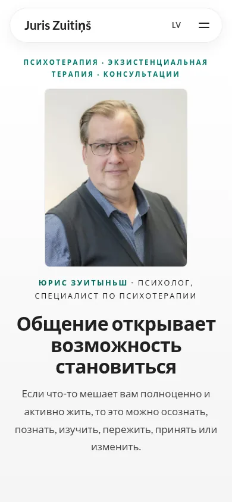
Krievu valodaTā pati vietne, otra valoda
Daļa Jura klientu runā krieviski, un vecajā risinājumā viņiem bija atsevišķa Google Sites lapa ru.zuitins.lv. Jaunajā vietnē krievu valoda ir pārslēgs katras lapas augšā: Sākums, Psihoterapija, Konsultācijas, Par mani un Kontakti visas ir arī krieviski, tajā pašā izkārtojumā, adresē zuitins.lv/ru/.
Viena tehniska nianse: Lato fontam Google versijā nav kirilicas. Tāpēc krievu lapās latīņu burtus zīmē Lato, bet kirilicu tās tuvākais radinieks Open Sans, un pārlūks tos savieno pa burtam. Uzvārda rakstību krieviski (Зуитыньш) un saukli “Общение открывает возможность становиться” precizēja Juris pats.
Meklētājiem abas valodas ir savienotas ar hreflang norādēm, lai Google zina, ka tā ir viena prakse divās valodās, nevis divas dažādas lapas.
SalīdzinājumsKas mainījās
TelefonāTur, kur lapu atver visbiežāk
Lielākā daļa cilvēku psihoterapeitu meklē telefonā, bieži vakarā un bieži pēc grūtas dienas. Vecajā lapā pirmajā ekrānā bija virsraksts, teksta sākums un sīkdatņu logs pāri pusei ekrāna. Jaunajā pirmajā ekrānā ir portrets, virsraksts un teikums par to, ko var mainīt. Poga ir tūlīt zem tā.
Portrets telefonā izgaist baltā fonā, un teksts ieplūst tam virsū, tāpēc foto un vārdi ir viens bloks, nevis divi atsevišķi gabali. Izvēlne ir aiz vienas pogas, valodas pārslēgs blakus tai.
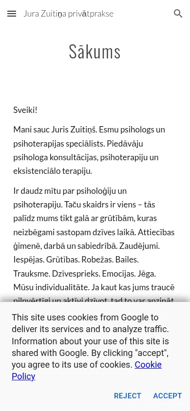
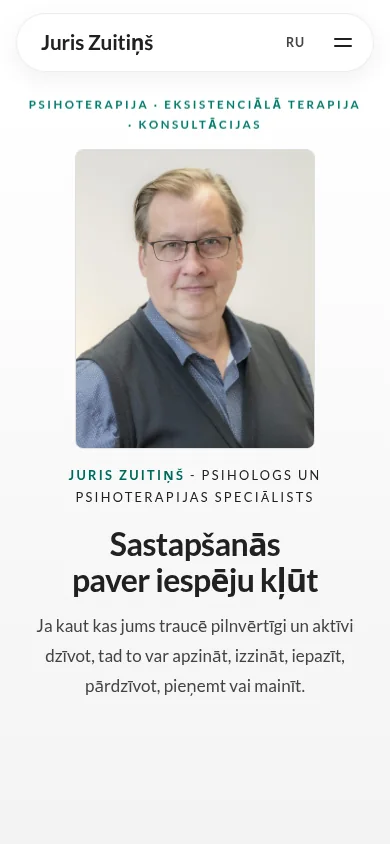
GaitaNo melnraksta līdz nodošanai 11 dienās
Sākumlapa četrās versijās. Pirmā ir melnraksts, ko uzbūvējām pirms līguma, lai Jurim ir par ko runāt. Pārējās rāda, kā lapa soli pa solim kļuva par to, ko Juris gribēja.
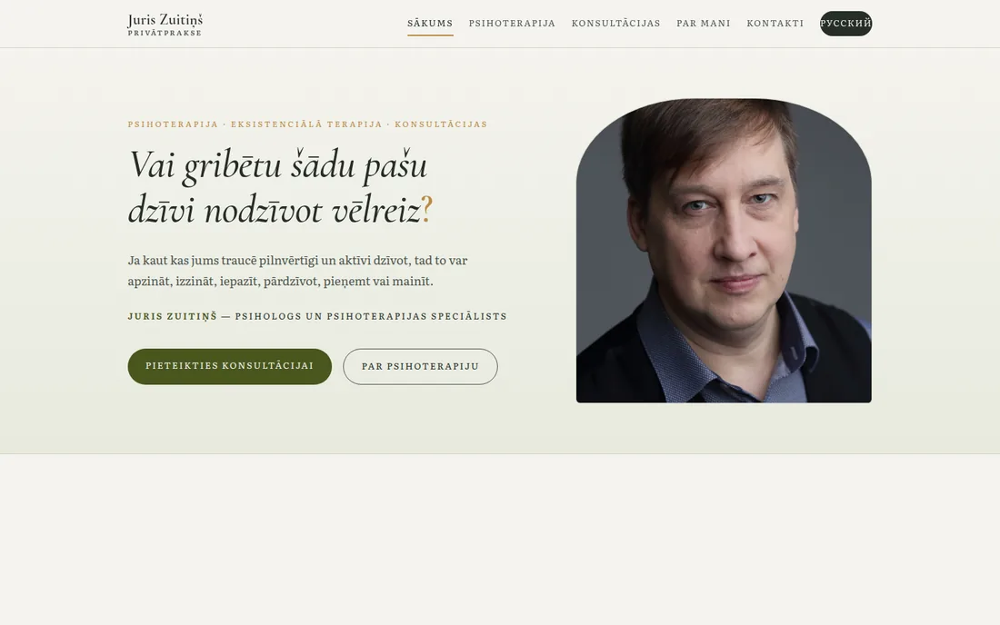
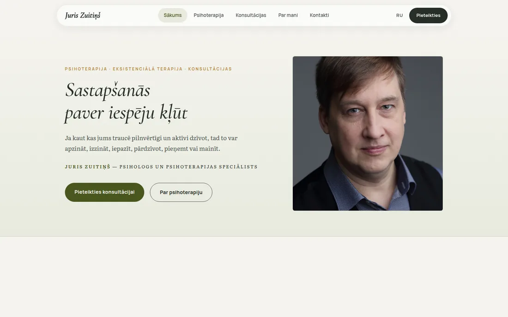
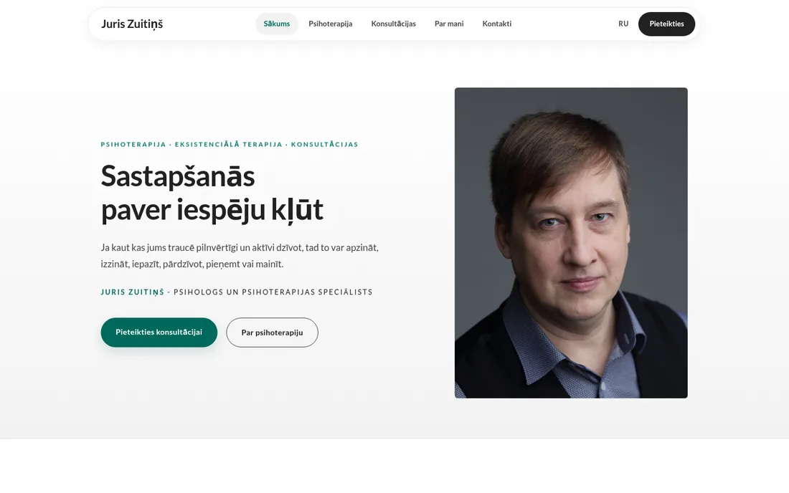
- 10. jūlijsMelnrakstsPirmo versiju uzbūvējām no vecās lapas satura vēl pirms līguma. Piecas sadaļas, abas valodas, viens domēns. Tā Juris redzēja nevis prezentāciju, bet gatavu lapu, ko var klikšķināt.
- 14. jūlijsLīgums un specifikācijaVienojāmies rakstiski, ko mainīt melnrakstā: krāsas un fontu pārņemt no vecās lapas, sākuma attēlu veidot kantainu, izņemt atslēgvārdu bloku ar apļiem un nomainīt virsrakstu uz “Sastapšanās paver iespēju kļūt”.
- 16. jūlijsBūveIeviesām specifikāciju, salikām krievu versiju ar Open Sans kirilicai, pievienojām pasvītrojuma animāciju, fotogrāfiju palielināšanu un telefona izkārtojumu ar portretu, kas izgaist tekstā.
- 17. jūlijsLapa dzīvāDNS pārslēdzām uz jauno lapu, saglabājot e-pasta ierakstus, lai juris@zuitins.lv strādā bez pārtraukuma. Atvērām indeksēšanu, pievienojām vietnes karti un Open Graph birkas.
- 20. jūlijsJura labojumiJuris atsūtīja jaunu portretu un kabineta fotogrāfijas, precizēja uzvārda rakstību un saukli krieviski, lūdza izņemt kontaktformu. Attēlus pārvērtām WebP formātā, un sākumlapa kļuva par divām trešdaļām vieglāka.
- 21. jūlijsNodošanaParakstījām pieņemšanas aktu dienu pirms līgumā noteiktā termiņa. Pirmie divi uzturēšanas mēneši iekļauti cenā.
Zem pārsegaTehniskā puse
Lapa ir statiska: tīrs HTML, viens CSS fails un viens JavaScript fails, bez satura vadības sistēmas, bez bibliotēkām un bez spraudņiem, kas jāatjauno. Tāpēc tā ielādējas ātri, tai nav, kam salūzt, un tā turpinās darboties arī pēc gadiem bez pieskaršanās.
RezultātsSava adrese un skaidrs ceļš līdz zvanam
Juris tagad ir savā domēnā ar lapu, kas pieder viņam pašam, nevis platformai. Apmeklētājs uzreiz redz, kas viņu sagaida, saprot, ar ko psihoterapija atšķiras no konsultācijas, un līdz pieteikšanās brīdim ir viens klikšķis. Krieviski runājošie klienti nonāk tajā pašā vietnē, nevis citā adresē.
Mitināšanu un uzturēšanu nodrošinām mēs, tāpēc par tehnisko pusi Jurim nav jādomā. Ja jāmaina teksts vai jāpievieno fotogrāfija, viņš uzraksta, un mēs izdarām.